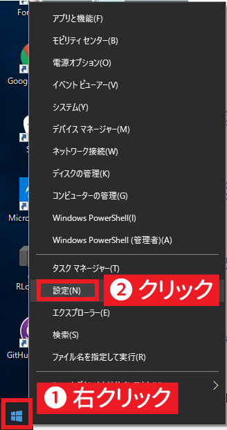
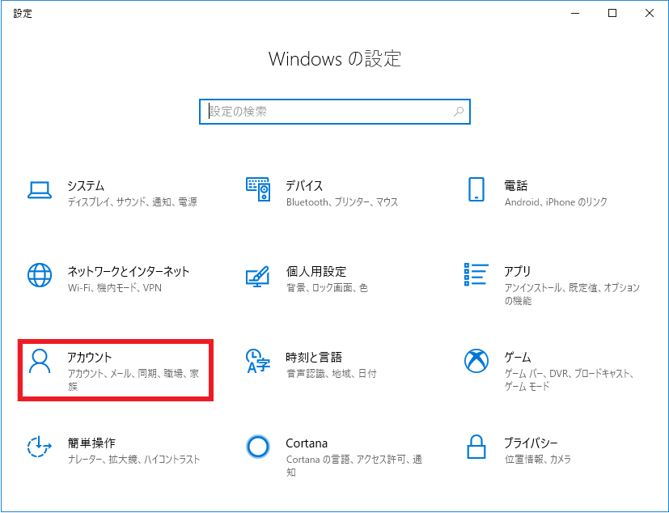
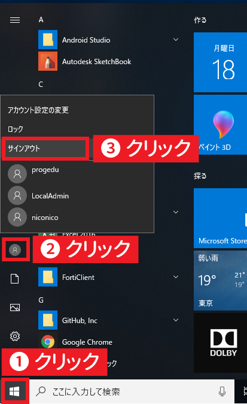

このページでは、アカウント名（ユーザー名）に日本語などが含まれているために Vagrantのインストール時にトラブルが発生した方向けに、Windows 10での新しいアカウント作成手順を解説したものです。
1. 設定画面を開く
スタートメニューを右クリックし、表示されたメニューの中から 「設定」をクリックします。
英語と日本語の対照
- Server Address → ホスト名（サーバーIPアドレス）
- Socket Port → TCPポート
- User Name → ログインユーザ名
- SSH Idenitiy Key → SSH 認証鍵
2. アカウント設定画面を開く
「アカウント」をクリックします。（なお、この画面では左下に表示されていますが、ウィンドウのサイズによって「アカウント」が表示される位置は異なる場合があります。）
3. ユーザを作成する

アカウント設定の画面に切り替わったら、左側のメニューから
「家族とその他のユーザー」をクリックします。
続いて、
「その他のユーザーをこの PC に追加」をクリックします。
「このユーザーのサインイン情報がありません」をクリックします。
「Microsoftアカウントを持たないユーザーを追加する」をクリックします。
「このPCを使うのはだれですか？」の欄にすべて半角英数字で新しいアカウントの名前を入力します。
また、新しいアカウントで使うパスワードを入力します。
続いて、スクロールして「パスワードを忘れた場合」の欄には、パスワードを忘れた場合の質問を入力します。
上記はあくまで記入例なので、自分がきちんと思い出せるものを入力してください。
入力が完了したら、「次へ」をクリックします。
元の画面に戻ったら、新しいアカウントが表示されているはずです。
このアカウントの名前の部分をクリックしてください。
すると、「アカウントの種類を変更」というボタンが出てくるので、そのボタンをクリックします。
アカウントの種類を「管理者」に変更し、「OK」をクリックします。
「管理者 - ローカルアカウント」となっていることを確認したら、設定画面を閉じます。
4. 新しいアカウントにログインする
現在のアカウントをログアウトします。（もし作業中のデータがあればすべて保存しておいてください。）
スタートボタンをクリックし、丸い人のマークのアイコンをクリックします。
続いて「サインアウト」をクリックします。
すると、パソコン起動時と同じような画面が現れるので、左下に表示される新しく作成したアカウントをクリックし、パスワードを入力してログインします。
以後、入門コースはそのアカウントで学習を進めてください。